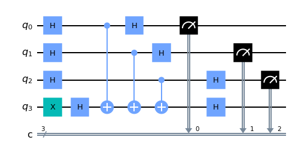
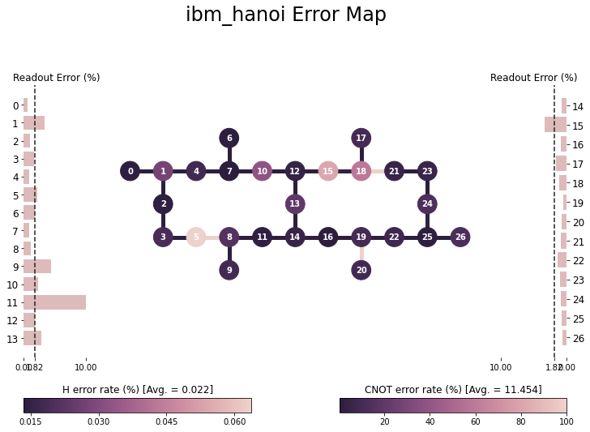
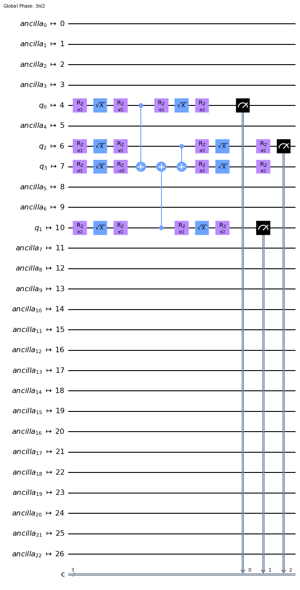
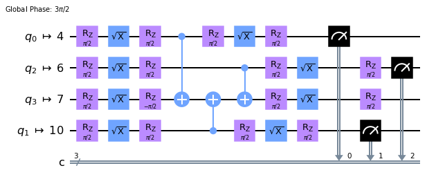
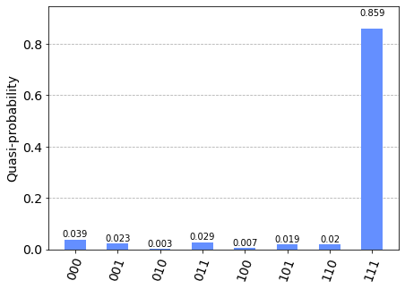
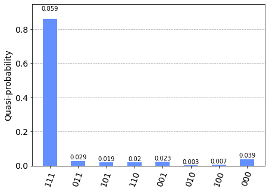
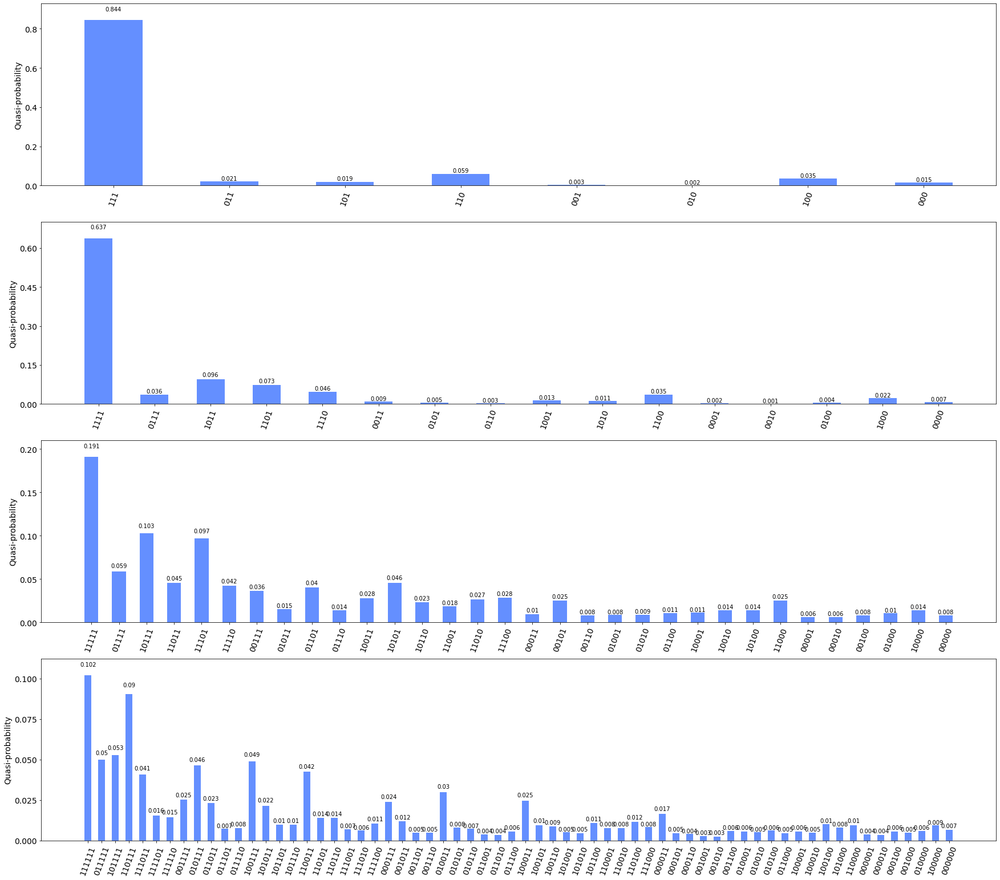
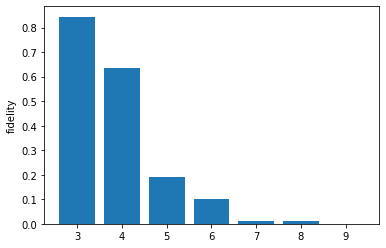

Topic 2. Executing IBM Quantum Systems#
Instructor : Hwajung Kang, Ph.D., Education Delivery Program Manager, IBM Quantum
from qiskit import *
from qiskit.visualization import plot_distribution, plot_error_map
from qiskit.quantum_info import hellinger_fidelity
from qiskit_aer import AerSimulator
from qiskit_ibm_provider import IBMProvider
import numpy as np
import matplotlib.pyplot as plt
import pandas as pd
a = '111'
nq = len(a)+1
bv = QuantumCircuit(nq, nq-1)
bv.x(nq-1)
bv.h(range(nq))
bv.cx(range(len(a)), nq-1)
bv.h(range(nq))
bv.measure(range(nq-1), range(nq-1))
bv.draw('mpl')

sim = AerSimulator()
counts_sim = sim.run(bv).result().get_counts()
counts_sim
{'111': 1024}
Quantum circuit execution on IBM Quantum system#
STEPS
Choose an IBM Quantum system
Transpile the circuit to be executable
Run the transpiled circuit on the chosen system
Step1 Choose a hardware and access its information#
prov = IBMProvider()
prov.backends()
[<IBMBackend('ibmq_kolkata')>,
<IBMBackend('ibmq_montreal')>,
<IBMBackend('ibmq_qasm_simulator')>,
<IBMBackend('ibmq_toronto')>,
<IBMBackend('ibmq_mumbai')>,
<IBMBackend('ibmq_lima')>,
<IBMBackend('ibmq_belem')>,
<IBMBackend('ibmq_quito')>,
<IBMBackend('ibmq_guadalupe')>,
<IBMBackend('ibmq_jakarta')>,
<IBMBackend('ibmq_manila')>,
<IBMBackend('ibm_hanoi')>,
<IBMBackend('ibm_lagos')>,
<IBMBackend('ibm_nairobi')>,
<IBMBackend('ibm_cairo')>,
<IBMBackend('ibm_auckland')>,
<IBMBackend('ibm_perth')>,
<IBMBackend('ibm_washington')>,
<IBMBackend('ibm_oslo')>,
<IBMBackend('ibm_geneva')>,
<IBMBackend('ibm_sherbrooke')>,
<IBMBackend('ibmq_bogota')>,
<IBMBackend('simulator_statevector')>,
<IBMBackend('simulator_mps')>,
<IBMBackend('simulator_extended_stabilizer')>,
<IBMBackend('simulator_stabilizer')>]
backend = prov.get_backend('ibm_hanoi')
#backend.configuration().to_dict()
conf = backend.configuration()
print('backend:{}'.format(backend.name))
print('num_qubit:{}, QV:{}, CLOP:{}\n'.format(conf.num_qubits, conf.quantum_volume, conf.clops))
print('max_num_circuits:{},'.format(conf.max_experiments),
'max_shots:{}\n'.format(conf.max_shots)) #default num_shots = 4000
print('basis gates:{}'.format(conf.basis_gates),'\n')
print('coupling map:{}'.format(conf.coupling_map))
backend:ibm_hanoi
num_qubit:27, QV:64, CLOP:2341
max_num_circuits:300, max_shots:100000
basis gates:['id', 'rz', 'sx', 'x', 'cx', 'reset']
coupling map:[[0, 1], [1, 0], [1, 2], [1, 4], [2, 1], [2, 3], [3, 2], [3, 5], [4, 1], [4, 7], [5, 3], [5, 8], [6, 7], [7, 4], [7, 6], [7, 10], [8, 5], [8, 9], [8, 11], [9, 8], [10, 7], [10, 12], [11, 8], [11, 14], [12, 10], [12, 13], [12, 15], [13, 12], [13, 14], [14, 11], [14, 13], [14, 16], [15, 12], [15, 18], [16, 14], [16, 19], [17, 18], [18, 15], [18, 17], [18, 21], [19, 16], [19, 20], [19, 22], [20, 19], [21, 18], [21, 23], [22, 19], [22, 25], [23, 21], [23, 24], [24, 23], [24, 25], [25, 22], [25, 24], [25, 26], [26, 25]]
plot_error_map(backend)

Step 2 Transpile a circuit (circuits) to run#
bv_trans = transpile(bv, backend)
display(bv_trans.draw('mpl'))
display(bv_trans.draw('mpl', idle_wires=False))
display(bv.draw('mpl'))


Step 3. Execute a circuit (circuits) on a chosen system.#
# job0 = backend.run(bv_trans, shots=conf.max_shots) #default num_shots = 4000
# print(job0.job_id())
job0 = prov.retrieve_job('cge8491qf3dvb4ojjetg')
counts_bv = job0.result().get_counts()
plot_distribution(counts_bv)

plot_distribution(counts_bv, target_string='1'*3, sort='hamming')

Impact of Noise#
def myfunc(my_str):
num_str = len(my_str)
ind = num_str - 1 - np.where(np.array(list(my_str)) == '1')[0]
qc = QuantumCircuit(num_str+1, name ='oracle')
qc.cx(ind, num_str)
U = qc.to_gate()
return U
def BV(U):
num_str = U.num_qubits - 1
qc = QuantumCircuit(num_str + 1, num_str)
qc.x(num_str)
qc.h(range(num_str + 1))
qc.barrier()
qc.append(U, range(num_str+1))
qc.barrier()
qc.h(range(num_str))
qc.measure(range(num_str), range(num_str))
return qc
qc_all = []
for k in range(3, 10):
U = myfunc('1'*k)
qc_all.append(BV(U))
print(len(qc_all))
qc_all_trans = transpile(qc_all, backend)
7
# job = backend.run(qc_all_trans, shots=conf.max_shots)
# print(job.job_id())
job = prov.retrieve_job('cge84l9qf3dvb4ojjn60')
counts_all = job.result().get_counts()
fig, axs = plt.subplots(4, 1, figsize=(30, 27))
for k in range(4):
plot_distribution(counts_all[k], ax=axs[k], target_string='1'*(3+k), sort='hamming')

# hellinger_fidelity
counts_ideal = [{'1'*k:1} for k in range(3, 10)]
x = list(range(3, 3+len(counts_all)))
y = [hellinger_fidelity(counts_ideal[k], counts_all[k]) for k in range(len(counts_all))]
fig, ax = plt.subplots()
ax.bar(x, y)
ax.set_ylabel('fidelity');

Noise Characteristics#
prop = backend.properties()
T1_all, err_cx_all, err_readout_all, err_sing_all = [], [], [], []
for k in range(conf.num_qubits):
T1_all.append(prop.t1(k)*1e6)
err_readout_all.append(prop.readout_error(k))
sing_gates = ['id', 'rz', 'sx', 'x']
err_sing_avg = []
for gate in sing_gates:
err_gate = []
for k in range(conf.num_qubits):
err_gate.append(prop.gate_error(gate, k))
err_sing_all.append(err_gate)
err_sing_avg.append(np.round(np.median(err_gate), 5))
for edge in conf.coupling_map:
err_cx_all.append(prop.gate_error('cx', edge))
##################
#T1
print('T1') #unit micro sec
print(*['q{} : {},\n'.format(k, np.round(T1_all[k], 2)) for k in range(conf.num_qubits)])
# readout err
print('readout')
print(*['q{} : {}\n'.format(k, np.round(err_readout_all[k], 4)) for k in range(conf.num_qubits)])
# cx gate err
print('cnot err')
print(*['{} : {}\n'.format(conf.coupling_map[k], np.round(err_cx_all[k], 4))
for k in range(len(conf.coupling_map))])
# # single qubit gate err
# #id
# print('id')
# print(*['q{} : {},\n'.format(k, np.round(err_sing_all[0][k], 4)) for k in range(conf.num_qubits)])
# #rz
# print('rz')
# print(*['q{} : {},\n'.format(k, np.round(err_sing_all[1][k], 4)) for k in range(conf.num_qubits)])
# #sx
# print('sx')
# print(*['q{} : {},\n'.format(k, np.round(err_sing_all[2][k], 4)) for k in range(conf.num_qubits)])
# #x
# print('x')
# print(*['q{} : {},\n'.format(k, np.round(err_sing_all[3][k], 4)) for k in range(conf.num_qubits)])
# mean err rate for each operation
print('backend:{}, num_qubit:{}\n'.format(backend.name, conf.num_qubits))
print('median error for single qubit gates')
print(dict(zip(sing_gates, err_sing_avg)),'\n')
print('median cx error')
print('cx : {}\n'.format(np.round(np.median(err_cx_all), 4)))
print('median readout error')
print('readout : {}'.format(np.round(np.median(err_readout_all), 4)))
T1
q0 : 233.37,
q1 : 119.87,
q2 : 197.56,
q3 : 48.8,
q4 : 212.08,
q5 : 108.76,
q6 : 88.32,
q7 : 148.21,
q8 : 221.99,
q9 : 231.1,
q10 : 58.19,
q11 : 105.39,
q12 : 263.29,
q13 : 204.48,
q14 : 180.46,
q15 : 159.27,
q16 : 221.13,
q17 : 135.19,
q18 : 175.8,
q19 : 149.04,
q20 : 103.19,
q21 : 178.47,
q22 : 180.83,
q23 : 170.15,
q24 : 179.29,
q25 : 131.39,
q26 : 77.28,
readout
q0 : 0.0062
q1 : 0.0328
q2 : 0.0093
q3 : 0.0163
q4 : 0.0091
q5 : 0.0219
q6 : 0.0181
q7 : 0.0083
q8 : 0.0117
q9 : 0.0432
q10 : 0.0232
q11 : 0.1
q12 : 0.0177
q13 : 0.0278
q14 : 0.0069
q15 : 0.0334
q16 : 0.0091
q17 : 0.0166
q18 : 0.0107
q19 : 0.0051
q20 : 0.0078
q21 : 0.0092
q22 : 0.0134
q23 : 0.01
q24 : 0.0091
q25 : 0.0079
q26 : 0.0064
cnot err
[0, 1] : 0.007
[1, 0] : 0.007
[1, 2] : 0.0046
[1, 4] : 0.0086
[2, 1] : 0.0046
[2, 3] : 0.0097
[3, 2] : 0.0097
[3, 5] : 0.0065
[4, 1] : 0.0086
[4, 7] : 0.01
[5, 3] : 0.0065
[5, 8] : 1
[6, 7] : 0.0032
[7, 4] : 0.01
[7, 6] : 0.0032
[7, 10] : 0.0037
[8, 5] : 1
[8, 9] : 0.0081
[8, 11] : 0.0034
[9, 8] : 0.0081
[10, 7] : 0.0037
[10, 12] : 0.0063
[11, 8] : 0.0034
[11, 14] : 0.0064
[12, 10] : 0.0063
[12, 13] : 0.0063
[12, 15] : 0.0083
[13, 12] : 0.0063
[13, 14] : 0.0048
[14, 11] : 0.0064
[14, 13] : 0.0048
[14, 16] : 0.0173
[15, 12] : 0.0083
[15, 18] : 0.022
[16, 14] : 0.0173
[16, 19] : 0.0038
[17, 18] : 0.0055
[18, 15] : 0.022
[18, 17] : 0.0055
[18, 21] : 1
[19, 16] : 0.0038
[19, 20] : 1
[19, 22] : 0.0085
[20, 19] : 1
[21, 18] : 1
[21, 23] : 0.007
[22, 19] : 0.0085
[22, 25] : 0.0067
[23, 21] : 0.007
[23, 24] : 0.0065
[24, 23] : 0.0065
[24, 25] : 0.0272
[25, 22] : 0.0067
[25, 24] : 0.0272
[25, 26] : 0.0055
[26, 25] : 0.0055
backend:ibm_hanoi, num_qubit:27
median error for single qubit gates
{'id': 0.00018, 'rz': 0.0, 'sx': 0.00018, 'x': 0.00018}
median cx error
cx : 0.0069
median readout error
readout : 0.0107